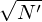

The overall error of the Monte-Carlo approximation given in Eq. (56) always scales like 1∕, which is independent of the dimensionality of the phase-space. It is easy to demonstrate that the overall error of the usual regular-grids approximation to the integration scales like 1∕N′1∕d, where d is the dimension of the phase space[4]. This fact implies that Monte-Carlo approximation is more accurate than the regular-grids methods for high-dimension (d ≥ 3) integration. Due to this reason, particle methods can be considered more accurate than the Euler-grid-based methods for the same number of sampling points in a high-dimensional (≥ 3) phase space.
On the other hand, PIC simulations obviously contain unphysical noise. The noise is due to the discrete marker effects, which can be further categorized into two types: sampling noise (fluctuation of the sampling error) and remaining unwanted collisions in a collisionless simulation.
Due to the limited small number of markers used in PIC code, there are considerable time and spatial fluctuation over the the number of markers in a spatial-cell. This fluctuation in the number of sampling points (i.e., fluctuation of the sampling error) gives rise to the sampling noise.
Inaccuracy in a PIC simulation is also related to the fact that the phase-space volume sampled by a marker is assumed to be constant in a PIC code but this assumption is not strictly satisfied in practice due to (1) the number of markers being not large enough and (2) the resulting self-consistent field being not smooth enough, which introduce effective collisional effects, making the conservation of the phase-space volume less accurate. How well the phase-space volume is conserved depends on the smoothness of the field: smooth field means less collisions and thus phase-space volume are better conserved. PIC simulation codes seek to reduce the collision through using finite-size particles (discussed in Sec. 3) and averaging in a spatial cell in solving for the electromagnetic fields, which effectively smooth the fields. This kind of PIC simulations are thus designed for collisionless plasmas. And the remaining collisional effect should be small enough to not affect the process of interest. And this remaining collisional effects should be viewed as numerical artifacts rather than a modeling of any real collisional effect in plasmas. If we want to model the real collisional effect in PIC simulation, we need to use other techniques rather than relying on the remaining collisions mentioned above because the latter is not easy to control and ideally should be completely removed.
Various noise reduction techniques in PIC codes (e.g., finite-size particles, grids, and perturbative δf method) can be used when the marker number is fixed. When exhausting all these methods, the final brute-force method of reducing noise (reducing collisions) is to increase the marker number. Therefore the noise issue is finally a convergence issue about the marker number.
From the view of particle simulations, the gyrokinetic model can also be considered as a noise reduction technique, where the gyro-averaging process makes the field on a marker more smooth.
(Noise in PIC code is equivalent to the remaining artificial collision effect? We can test this by doing a test particle simulation, in which we loaded a group of markers to sample a distribution function in the phase space and then compute the density evolution of the sampled distribution under a given smooth electromagnetic field (i.e., eliminating the collisional effect). If there is still significant noise in the time evolution, then this indicates there are factors other than collisions that contribute to the noise. I did this when I studied Landau damping, the results indicate there is still significant noise in the solution, indicating the discrete phase space sampling is the root of the noise.)
One thing to note is that the noisy results obtained in particle method are not necessarily less accurate than the smooth results obtained in Euler-grid-based methods because bigger errors may be hidden in smooth results when one uses coarse grids.